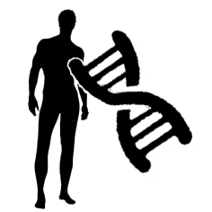
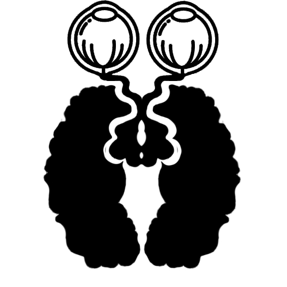
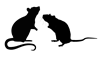
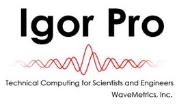

Ming-Hsuan LU
I am experienced in using animal models and clinical studies to gain biological insights into mental illness. Integrative approaches and collaborative thinking foster discoveries that will transform medicine and improve people's lives.
Experience
Biological psychiatry lab
Studied a family of monozygotic twins with childhood-onset schizophrenia sharing 15q11.2 microdeletion. Analyzed neuropsychological tests, event-related potential, diffusion spectrum magnetic resonance imaging, and iPS cell characterization. Reviewed and discussed literature on the copy number variation in schizophrenia and other neurodevelopmental disorders.
 Neural transmission lab
Spontaneous bursts of action potentials spread across the developing neural tissue and drive circuit refinement. To investigate if patterned spontaneous activity could be substrate of neurodevelopmental disease, I studied a neural transmission machinery protein “dysbindin”, also known as a schizophrenia-susceptibility protein. I applied a transient expression system in organotypic culture of postnatal rat retina to manipulate expression level of dysbindin. Using calcium imaging and whole-cell patch-clamp recording, I showed that dysbindin regulates spatiotemporal pattern of retinal waves and pairwise correlations in neighboring neurons.
Laboratory of Behavioral Genetics
Anxious-prone people are predisposed to social submissiveness under stress. To model trait anxiety, I tested outbred rats and classified them with behavioral experiments. Given that stress and social hierarchy strongly modulate neural activity in the ventral striatum, I examined if extracellular dopamine level at the nucleus accumbens (NAc) alters as a function of trait anxiety and stress. I demonstrated that dopamine level increases upon stress, as modeled with infusing corticosterone into NAc, compared with baseline. However, anxious-prone rats do not differ from normal rats in terms of dopamine level at baseline or upon stress. Further study in the lab revealed decreased dopamine receptors at the NAc in anxious-prone rats.
Neurogenetics lab
Drosophila genetic toolbox enables precise control of gene expression in single neuron. Rab27 is a neuron-specific small GTPase and Rab27-knockout flies showed deficits in memory function. I applied the GAL4/UAS system and olfactory aversive conditioning to dissect the the role of Rab27 in different brain regions and stages of memory. I also helped the lab generate CRISPR/Cas9 flies.
Education
National Taiwan University (NTU)
Medical License, Taiwan R.O.C.
Taipei Municipal Jianguo High School
(10 out of >1,200 for outstanding achievements in extracurricular activity)
Skills
- 
-

Interests
Apart from being in labs and hospitals, I enjoy my time being outdoors. I have travelled to the mountains of Tibet and rainforests of Borneo. Watching wild animals in their natural habitat being themselves is one of the most invigorating experiences.
I am a PokemonGo trainer of Team Instinct at top level. I enjoy the encounter with lovely beasts while exploring the city. I am also a fan of Japanese culture, fictions, movies, and games. I have done a clinical internship at Kyoto University Hospital and had the luck to enjoy the city thoroughly.
Awards & Honors
Publications
- Ming-Hsuan Lu, Ming-Hsien Hsieh, Wen-Yih Isaac Tseng, and Chih-Min Liu. “A family study of a monozygotic twins with early-onset schizophrenia sharing 15q11.2 microdeletion: neuropsychological tests, event-related potential, diffusion spectrum magnetic resonance imaging, and iPS cells characterization” (in preparation)
- Wen-Chi Lee, Shin-Hua Lu, Ming-Hsuan Lu, Chen-Jui Yang, Shu-Hsing Wu, and Ho-Ming Chen. “Asymmetric bulges and mismatches determine 20-nt microRNA formation in plants.” RNA Biol. 2015;12(9):1054-66.
- Ming-Hsuan Lu and Chih-Tien Wang. “Dysbindin, a schizophrenia susceptibility gene, regulates patterned spontaneous activity in the developing rat retina.” The 46th Annual Meeting of the Society for Neuroscience (11-16 November 2016, San Diego, CA, U.S.A.).
- Tzu-Lin Cheng, Ming-Hsuan Lu, and Chih-Tien Wang. “Cholinergic retinal waves are regulated by the dysbindin expression levels in developing retinal ganglion cells.” The 49th Annual Meeting of the Society for Neuroscience (19-23 October 2019, Chicago, IL, U.S.A.).
- Michael van der Kooij et al., “Diazepam actions in the VTA enhance social dominance and mitochondrial function in the nucleus accumbens by activation of dopamine D1 receptors.” Mol Psychiatry. 2018;23(3):569-78.